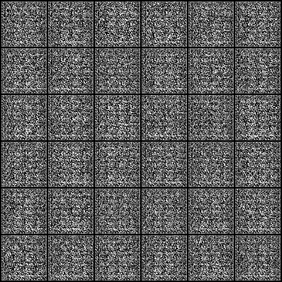

第 1 轮固定噪声输出

对应 Notebook 保存的 task2_epoch_1.png。
从 X 射线穿透和胸片投影开始，理解数字图像怎样进入生成模型，再用一个轻量 DCGAN 观察生成器、判别器和生成样本的变化。
先把胸片中的灰度和结构来源看清楚，再追踪一批随机数怎样变成图像，最后用样本、曲线和多样性一起判断结果。
X 射线是一种能量较高的电磁辐射。成像设备从一侧发出射线，光子穿过人体后到达另一侧的探测器。骨和高密度组织吸收、散射更多射线，含气肺组织的衰减较弱，探测器接收到的光子数量因此形成差异。
胸部 X 射线片把肺、心脏、纵隔、肋骨和膈肌等结构压缩到一张二维图像中。一个像素汇总了射线路径上多个组织的共同影响，图像中的二维位置可以指示结构的大致投影位置，前后深度仍然发生重叠。
射线穿过的组织路径越长，探测器接收到的相对强度越低。
普通胸片从一个或少数方向记录投影；CT 围绕患者从多个角度采集投影，再通过数学算法恢复横断面。两种检查共享 X 射线衰减物理，图像中的空间含义不同。

肺血管经过心影或膈肌附近时，对比度可能降低；位于肋骨后的结构也可能被部分遮挡。侧位胸片改变了投影方向，前后方向上重叠的结构会重新排列，有助于判断阴影所在区域。
射线衰减可以用简单关系表示：I = I₀ exp(−μx)。其中 I₀ 是入射强度，I 是到达探测器的强度，μ 是材料对当前能量 X 射线的线性衰减系数，x 是射线路径长度。实际人体包含多种组织，整条路径上的衰减共同决定探测器读数。
射线源近似位于有限焦点，射线束向外发散。物体距离探测器越远，投影放大越明显。后前位检查中胸部贴近探测器，心影放大相对较少；床旁前后位检查中，心脏距离探测器更远，心影更容易显得偏大。
吸气不足、身体旋转、运动、衣物、导管和金属设备都会改变胸片外观。模型训练前需要把这些采集差异记录下来，观察模型学习到的是胸片结构还是采集条件。
DICOM 文件同时保存像素矩阵和检查信息，常见字段包括患者与检查标识、体位、图像尺寸、位深、灰度解释和像素间距。这些字段帮助理解真实医学影像的采集过程；本实践读取已经整理好的文件夹图像，Notebook 通过 ImageFolder 取得 NORMAL 与 PNEUMONIA 两类胸片。目录名称在代码中读入为 real,_，只用于取得 ImageFolder 样本，训练过程没有使用疾病目录标签，因此这里是无条件图像生成任务。
| 字段 | 含义 | 进入模型前要确认 |
|---|---|---|
| Rows / Columns | 图像矩阵的高和宽 | 确定缩放和批处理方式 |
| BitsStored | 有效位深 | 避免错误压缩灰度范围 |
| PhotometricInterpretation | 数值与黑白显示的对应关系 | 确认是否需要反相 |
| ViewPosition | PA、AP 或侧位 | 记录体位分布 |
| PixelSpacing | 像素对应的物理尺寸 | 涉及长度、面积时保留 |
本实践从图像文件夹读取胸片，统一转为单通道灰度图，先缩放到 72，再中心裁剪为 64×64，最后转换为张量并归一化到 [-1,1]。这条处理链对应 Notebook 中的 Grayscale(1) → Resize(72) → CenterCrop(64) → ToTensor() → Normalize([.5],[.5])。
模型值 = 2 × 显示值 − 1
显示值 0.50 位于灰度中间，映射后为 0.00。
显示图像时，Notebook 再把模型输出从 [-1,1] 映射回 [0,1]。生成器最后一层使用 Tanh，输出范围与归一化后的真实图像一致；显示时再把数值映射回 [0,1]。
无条件生成模型的输入是一组随机数，输出是一张新的单通道图像。模型学习的是训练数据的统计规律，输出可以呈现与训练集相近的肺野轮廓、心影位置、肋骨纹理和灰度分布。固定一个随机向量，模型训练过程中的每一轮输出可以用来观察图像怎样逐渐变化。
胸片生成任务同时要求整体结构和局部纹理保持合理。肺野、纵隔、膈肌、肋骨和肩胛骨之间存在空间关系，输入预处理需要统一方向、灰度范围和尺寸，并检查损坏图像与异常尺寸。
生成器努力产生更接近真实胸片的样本，判别器努力判断输入来自真实数据还是生成器。两套参数交替更新，训练过程中的“对抗”指的是这两个目标相互提供学习信号。
100 个随机数组成一个生成起点，shape 为 [B,100,1,1]。不同的 z 会给生成器不同的起点。
逐层放大空间尺寸，把 z 转成 [B,1,64,64] 的胸片张量。
读取真实或生成的胸片，输出一个 logit；这个分数进入 BCEWithLogitsLoss，形成训练信号。
生成器先把 100 维潜变量扩展为 4×4 的多通道特征块，再逐层扩大空间尺寸并减少通道数，最后输出单通道 64×64 胸片。Notebook 中的 Generator.net 需要完成这条 shape 路径。
判别器逐级缩小图像空间尺寸，通道数逐级增加，最后得到 [B,1,1,1]，经过 flatten() 变成每张图一个真实性 logit 的 [B]。代码中的 ones 与 zeros 是真假标签，和 NORMAL、PNEUMONIA 目录标签属于不同概念。BCEWithLogitsLoss 将这个 logit 与真实标签或生成标签比较。
判别器更新阶段，真实胸片的标签设为 1，生成胸片的标签设为 0。生成器产生的图像在这一步使用 detach()，梯度停留在判别器更新路径中。生成器更新阶段重新生成图像，让判别器把这些图像判断为真实，生成器参数由这一目标的梯度更新。
先计算 fake=G(z)，再使用 fake.detach() 送入判别器。梯度沿判别器路径更新。
重新计算 fake=G(z)，把生成图像的标签设为 1，让生成器收到完整的判别反馈。
固定 fixed_z，比较同一组随机起点在第 1、4 轮的输出变化。
z，生成假胸片。loss_d 和 loss_g。固定噪声 fixed_z 在每轮训练中保持不变。每一轮用同一组随机起点保存生成样本，就能把图像变化归因于模型参数更新。训练曲线需要和样本网格一起阅读：判别器损失很低时，生成器可能收到较弱的梯度；生成器损失变化也需要结合图像结构和样本多样性判断。
模式坍塌表现为不同随机向量产生的图像过于相似。胸片任务中可以检查肺野轮廓、心影大小和整体灰度是否反复出现。样本两两距离、固定噪声网格和灰度直方图可以共同帮助判断。
训练早期，生成器通常先学到整体亮暗和大致轮廓；随着训练推进，局部纹理和结构关系可能变得更清楚，也可能出现伪影或重复。观察时需要同时记录结构较完整的部分、明显伪影和重复样本。

对应 Notebook 保存的 task2_epoch_1.png。

对应 Notebook 保存的 task2_epoch_4.png。
上图为实践项目已保存的真实运行结果，用于阅读训练过程和结果分析。本次参考运行保留了明显的高频噪声和条纹，可作为训练尚未充分收敛时的结果样例。
结构合理性观察肺野、心影、膈肌、肋骨和整体灰度关系。样本多样性观察不同随机向量是否产生明显相似的图像。训练稳定性结合生成器与判别器损失曲线、固定噪声输出和像素强度分布判断。

固定噪声生成网格，文件名为 task2_generated_samples.png。

记录 loss_d 与 loss_g 的变化。
样本两两距离是 4096 个像素展平后计算的平均欧氏距离，用于描述像素空间差异；它需要和样本网格、结构完整度及灰度分布一起阅读。
这次参考运行最后一轮生成器平均损失为 6.0221351，判别器平均损失为 0.0328187。阅读这些数字时要回到样本网格：损失曲线提供训练过程线索，图像结构和重复程度决定结果分析的具体内容。

真实胸片经过 Normalize([.5],[.5]) 后，像素范围从 [0,1] 变为 [-1,1]。生成器最后一层使用 Tanh，把输出压到同一范围；显示图像时再计算 (x + 1) / 2，恢复到 [0,1]。
Notebook 把每张生成图展平为 4096 个像素，再用 torch.cdist 计算样本之间的欧氏距离，只取距离矩阵上三角的不同样本并求平均。这个数描述像素空间中的差异，需要与固定噪声网格、结构完整度和灰度分布一起判断生成质量。
距离很小，可能提示样本过于相似；距离较大，可能来自样本差异，也可能来自噪声或伪影。阅读时要同时查看固定噪声网格、结构完整度和灰度分布。
| 文件 | 产生时机 | 阅读重点 |
|---|---|---|
task2_epoch_1.png | 第 1 轮结束后，使用固定 fixed_z | 生成器刚开始学习时的整体亮暗、轮廓和明显伪影。 |
task2_epoch_4.png | 第 4 轮结束后，仍使用同一组 fixed_z | 与第 1 轮逐格比较结构变化、纹理变化和重复样本。 |
task2_generated_samples.png | 训练结束后保存的固定噪声网格 | 查看最终样本的结构与多样性。 |
task2_pytorch_result.json | 训练结束后写入 /kaggle/working | 核对轮数、潜变量维度、两侧损失和样本两两距离。 |
| 任务 | 填写位置 | 检查重点 |
|---|---|---|
| 1 归一化 | “你的回答”Markdown 单元格 | 写清 [0,1] → [-1,1]、Tanh 和显示时的反变换。 |
| 2 生成器 | Generator.net 的 TODO | 按 [B,100,1,1] → [B,1,64,64] 补全转置卷积，并运行 shape 检查。 |
| 3 对抗训练 | loss_d、loss_g 与更新步骤 | 判别器阶段使用 fake.detach()；生成器阶段重新生成并使用真实标签。 |
| 4 结果检查 | “你的回答”Markdown 单元格 | 分别记录结构、伪影、重复样本、损失曲线和样本距离的观察。 |
[-1,1]，以及生成器最后一层需要怎样的输出范围。结合数据变换和显示时的反变换写出完整解释。Generator.net，让输入 [B,100,1,1] 经过上采样得到 [B,1,64,64]。先按 shape 流程确定每层，再运行下一行的 shape 检查。loss_d 和 loss_g 的计算、反向传播与参数更新。判别器阶段的生成图像使用 detach()，生成器阶段重新生成图像并让判别器输出真实标签。先阅读当前单元格的变量名、注释、输入输出 shape 和下一步的检查语句；再填写代码。遇到看不懂的代码，可以向 AI 询问当前单元格的作用、输入输出和每一行的变化，再逐步运行核对。逐步借助 AI 读懂和完成代码是科研实践中的常用能力。需要对照时，可以打开实践项目参考答案，对照变量、shape 和训练顺序逐项检查。
task2_real_xray_grid.png、task2_intensity_histogram.png、task2_generated_samples.png、task2_training_curve.png 和 task2_pytorch_result.json。这些文件来自你的运行结果，保存位置为 Kaggle 的 /kaggle/working。